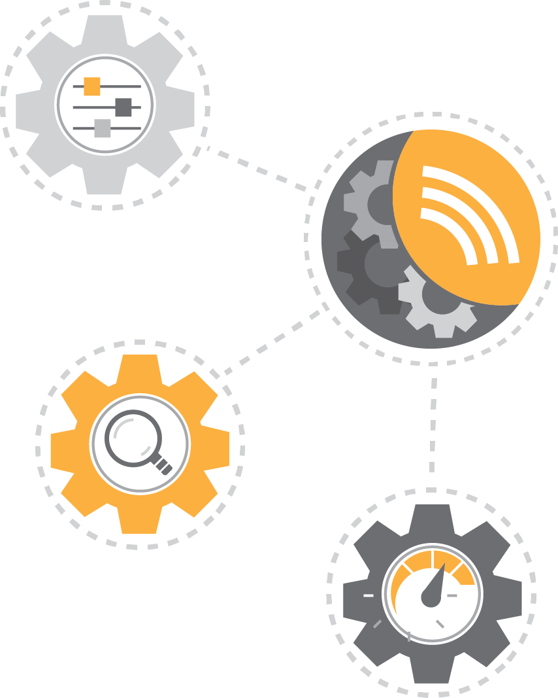

Deploy Instruments like
Traffic Guard,
Beacon and
PortDiff for inventorying the assets
and connections, hardening and closing the unnecessary services while at it.
 Once the baseline has been established, use these same Instruments for
continuous integrity monitoring.
Once the baseline has been established, use these same Instruments for
continuous integrity monitoring.

The next step could be systematic log collection with the help of
Log Forwarder, or attack detection with the
Suricata IDS Instrument.
Now you have comprehensive 24/7 detection capabilities up and running. Maybe
it's a good time to add Instruments aiding in forensics, such as
Netflow collector and
Traffic Recorder? They are just a few
clicks away.